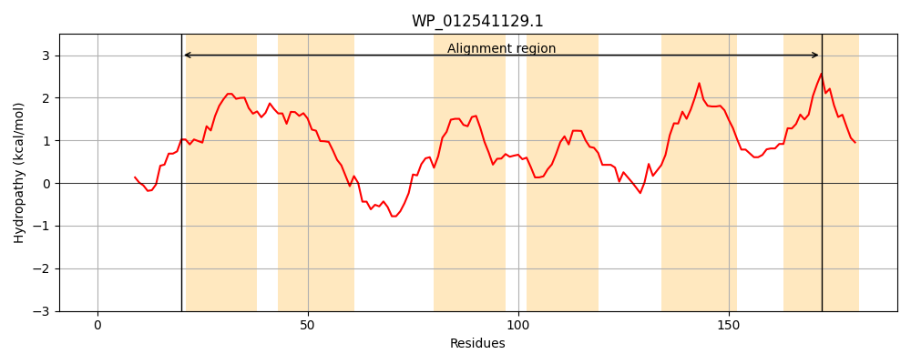
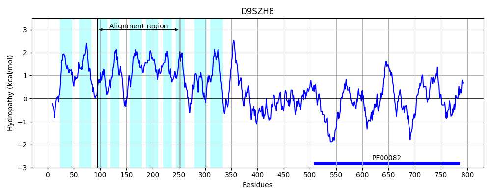
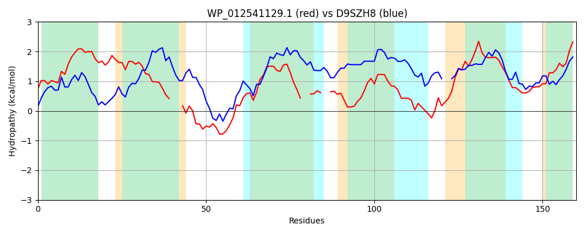

Hit Accession: D9SZH8
Hit TCID: 2.A.7.3.49
Hit Description: gnl|BL_ORD_ID|3523 gnl|TC-DB|D9SZH8|2.A.7.3.49 Peptidase S8 and S53 subtilisin kexin sedolisin OS=Micromonospora aurantiaca (strain ATCC 27029 / DSM 43813 / JCM 10878 / NBRC 16125 / INA 9442) GN=Micau_5747 PE=4 SV=1
Mach Len: 160
e:0.000117
Query TMS Count : 6
Hit TMS Count: 10
TMS-Overlap Score: 4.400000
Predicted Substrates:CHEBI:7990;peptide
BLAST Alignment:
| Protein Hydropathy Plots: | |
|---|---|
|  |  |
Pairwise Alignment-Hydropathy Plot: | |
|  | |